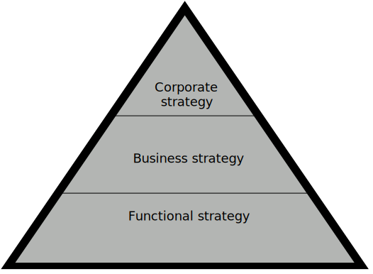

Strategy
- Strategy is tactical course of action which is designed to achieve long term objectives. It is an art
and science of planning and marshalling resources of their most efficient and effective use in a
changing environment.
- Strategy of a business enterprise consists of what management decides about the future direction and
scope of the business.
Features of strategy
- Top management responsibility
- Allocation of large amount of resources
- Impact on long term prosperity of the firm
- Future oriented
- Multi-functional or multi-business consiquences
- Consideration of factors in the external environment.
Levels of strategy

Corporate level strategy
- At this level, strategic decisions related to organization-wide policies are taken by top level
management with a vision of determining 'where the company wants to be?'.
- It has two main aspects: formulation of strategy (strategic planning) and strategy
implementation
- The nature of strategy at this level tend to be value-oriented, conceptual and than other
levels.
- Major financial policy decisions involving acquisition, diversification and structural
redesigning belong to this level.
Business level strategy
- Business level strategy is more likely related to a unit within the whole. It is concerned with
competition in a market.
- The concerns are about what products or services should be developed and offered to which
markets in order to meet customer needs and organizational objectives.
Functional/Operational level strategy
- Functional strategy involves decision making with respect to specific functional areas-
production, marketing, personnel, finance, etc.
- While corporate and business level strategies are concerned with "doing the right things",
functional strategies stress on "doing things rights".